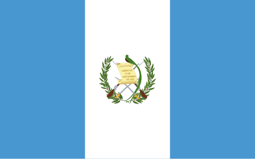

Douglas Caceres
About Me
My name is Douglas Caceres, and I am a student at BYU-Idaho. I am currently pursuing a degree in Web Design and Development. I have always been interested in technology and design, and I am excited to learn more about web development through this course. I live in Guatemala and work for US based company called ION Solar
Villanueva, Guatemala
Villanueva is a city located in the department of Guatemala, Guatemala. It is known for its beautiful landscapes, rich culture, and warm climate. The city is surrounded by mountains and has a vibrant community that celebrates traditional festivals and events throughout the year. Villanueva offers a mix of modern amenities and traditional charm, making it a unique place to live and visit.
